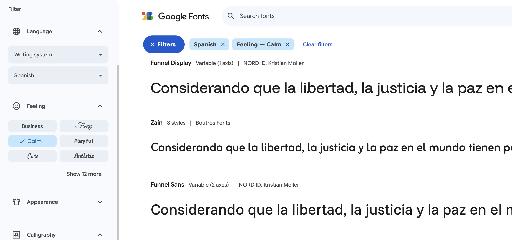
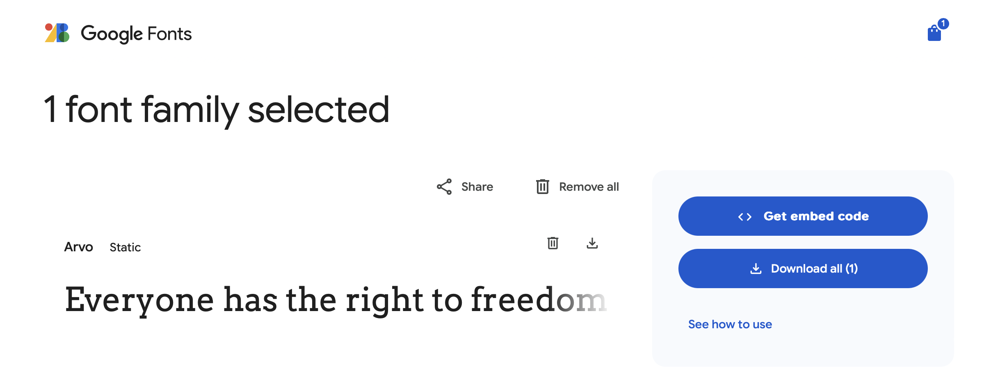

Tipografías personalizadas en gráficos {ggplot2}
26/8/2025
¿Quieres darle un toque personalizado a tus gráficos? O tal vez alinearlos mejor al mensaje que quieres entregar, o a los lineamientos estéticos de tu organización. En esta breve guía te explico cómo cambiar las tipografías, tipos de letra o fuentes de tus gráficos hechos en R
con {ggplot2}.
Para demostrar, primero creemos datos ficticios siguiento distribuciones normales:
library(ggplot2)
library(dplyr)
# crear datos al azar
datos <- tibble(a = rnorm(20, mean = 10, sd = 1),
b = rnorm(20, mean = 10, sd = 1),
c = round(rnorm(20, mean = 10, sd = 1), 1))
Ahora creemos un gráfico de dispersión como muestra, con un poco de texto extra:
grafico <- datos |>
ggplot() +
aes(x = a, y = b) +
geom_point(size = 2, alpha = 0.4) +
labs(title = "Gráfico de dispersión",
subtitle = "Números al azar",
x = "Eje horizontal", y = "Eje vertical",
caption = "Fuente: de los deseos") +
theme_light(base_size = 12) +
theme(plot.title = element_text(face = "bold"))
Por defecto, {ggplot2} usa las tipografías Helvetica en Mac y Arial en Windows:
grafico
A pesar de no ser malas tipografías, se vuelven aburridas rápidamente.
Tipografías instaladas
Podemos cambiar la tipografía de los gráficos {ggplot2} fácilmente si éstas se encuentran instaladas en tu computador. Por ejemplo, La tipografía Menlo que viene por defecto en Mac.
Para establecer la tipografía de los gráficos, modificamos desde el tema (theme()) los elementos de texto (text = element_text()), especificando en el argumento family el nombre de la tipografía:
# especificar tipografía desde el tema
grafico +
theme(text = element_text(family = "Menlo"))
Si agregamos capas de texto al gráfico (con geom_text(), geom_label() u otros), tenemos que especificar la tipografía que usaremos en cada capa. En el siguiente ejemplo, agregamos con geom_text_repel() una
capa de texto que se repele de los puntos y otras etiquetas de texto automáticamente.
# especificar tipografía para geom_text() y también para el tema
grafico +
ggrepel::geom_text_repel(aes(label = c), family = "Menlo") +
theme(text = element_text(family = "Menlo"))
Tipografías web desde Google Fonts
Si no tienes la tipografía que buscas instalada en tu computadora, puedes usar tipografías web sin necesidad de instalar ni descargar nada. En la página Google Fonts existe un catálogo de cientos de tipografías de todo tipo, gratuitas y de código abierto.
Entra a Google Fonts y busca una tipografía. Recomiendo seleccionar tipografías en Español (para que tengan soporte para tildes y eñes), y usar las opciones del lado izquierdo para encontrar tipografías por varias cualidades, como que evoquen calma o innovación, o según el estilo de fuente como serif (con terminaciones al final de los trazos) o sans serif (sin terminaciones al final de los trazos).
Cuando la encuentres, copia el nombre de la tipografía para agregarla a tu entorno de R con la función font_add_google() del
paquete {showtext}. Este paquete te permite agregar tipografías a R para usarlas en tus gráficos.
Para usar la tipografía debes agregarla con font_add_google(), luego activar {showtext} ejecutando showtext_auto(), y finalmente especificar la resolución de tu pantalla con showtext_opts(dpi = 300).
library(showtext)
# descargar una tipografía desde google fonts
font_add_google(name = "Pacifico")
# activar tipografías
showtext_auto()
showtext_opts(dpi = 300)
# usar la tipografía desde Google Fonts
grafico +
ggrepel::geom_text_repel(aes(label = c), family = "Pacifico") +
theme(text = element_text(family = "Pacifico"))
Ahora puedes usar cientos de tipografía con tus gráficos en R! 🥳 Solamente busca la que necesites en
Google Fonts y podrás usarla en {ggplot2}.
Tipografías descargadas
Si descargaste tipografías desde otros sitios (en formatos como ttf, otf, woff y otros) también puedes agregarlas a R con {showtext}. Para agregar las tipografías, usa font_add(), especificando los archivos que corresponden a los estilos de letras como regular, bold e italic.
Por ejemplo, vamos a Google Fonts y descargamos la tipografía Arvo.
al descargarla obtendremos archivos como los siguientes:
Arvo-Regular.ttfArvo-Bold.ttfArvo-Italic.ttf
Agregamos las tipografías a R con font_add(), asumiendo que las guardamos en una carpeta llamada tipografías:
# agregar una tipografía desde un archivo
font_add("Arvo",
regular = "tipografías/Arvo-Regular.ttf",
bold = "tipografías/Arvo-Bold.ttf",
italic = "tipografías/Arvo-Italic.ttf")
Luego seguimos los mismos pasos de antes para usarlas en nuestros gráficos {ggplot2}:
# activar tipografías
showtext_auto()
showtext_opts(dpi = 300)
# probar tipografía descargada como archivo desde Google Fonts
grafico +
ggrepel::geom_text_repel(aes(label = c), family = "Arvo") +
theme(text = element_text(family = "Arvo"))
Este método puede optimizar la ejecución de nuestros scripts, dado que la función font_add_google() descarga las tipografías cada vez que ejecutamos la función, mientras que si descargamos los archivos directamente no necesitamos descargar múltiples veces los archivos.
También se puede usar la función setup_font("arvo", "tipografías") del
paquete {gfonts} para descargar automáticamente las tipografías de Google Fonts en tu proyecto de R, y así usarlas sin descargas ni necesidad de conexión a internet. Para averiguar los nombres de las tipografías puedes ejecutar gfonts::get_all_fonts().
- Fecha de publicación:
- August 26, 2025
- Extensión:
- 4 minute read, 804 words